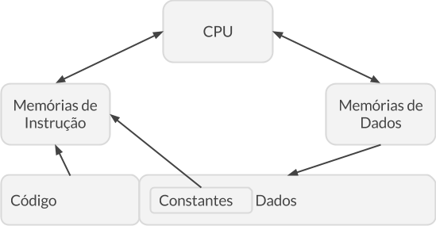

Organização e Arquitetura
Por, Eduardo Reis NobreUma idéia presente em diversos campos da computação é o conceito que para um mesmo problema existem diversas soluções. A própria essência da computação contêm esse conceito, visto que para a organização e arquitetura de computadores pode ser realizada de diversas formas. Este texto abordará a arquitetura conhecida como Harvard, utilizada no computador Mark I e a arquitetura chama de Von Neumann, que recebe seu nome do seu criador John von Neumann, suas características, diferenças e usos.
Harvard
A arquitetura de Harvard é uma arquitetura que possui uma separação física entre o espaço para armazenamento e barramentos utilizados para o armazenamento e tráfego de dados respectivamente de instruções e dados.
O seu nome se originou da sua criação do Harvard Mark I, computador baseado em relés que tinha suas instruções armazenadas em cartões perfurados de 24 bits de largura e seus dados armazenados em contadores eletromecânicos.
Em sua arquitetura não havia a necessidade das memórias utilizadas para o armazenamento de instruções e dados compartilharem características como largura da palavra, tecnologia de implementação e estrutura de indireção pode diferir.
![]()
Harvard Modificada
Esta implementação da arquitetura de Harvard contém uma modificação em sua estrutura, adicionando um caminho pelo qual a CPU passa a ser capaz de tratar palavras contidas na memória de instruções a serem tratadas como Dados apenas de leitura fazendo com o que dados constantes, como uma string por exemplo, pode ser lida dentro da memória de instruções ao invés da memória de dados. Essa modificação libera mais espaço da memória de dados para variáveis de escrita e leitura.
Sua grande vantagem se encontra na capacidade de acessar simultaneamente ambos o tipos de memória.
Os sistemas modernos que dizem usar a arquitetura de Harvard, na verdade utilizam a sua versão modificada. Hoje seu uso se encontra restrito a aplicações de nicho a sua facilidade de programação e baixa complexidade são apreciadas.
Um campo que faz grande uso dessa arquitetura é a área processamento de sinal digital, por conta da capacidade de ler tanto dados quanto instruções paralelamente arquitetura de harvard é especialmente poderosa nesse caso. A grande maioria das instruções realizadas nesse campo fazem acesso a memória [1], portanto a arquitetura de barramento duplo, acaba economizando um grande número de ciclos de máquina.
Von Neumann
A arquitetura de Von Neumann, também chamada de Arquitetura de Princeton, baseada nas anotações do matemático Jonh Von Neumann e seu time em 1945 em um documento chamado First Draft of a Report on the Edvac (Primeiros Rascunhos de um Relatório sobre o Edvac), que descreve a arquitetura para um computador eletrônico digital, consistindo em:
- Uma unidade de processamento, contendo uma unidade lógica e aritmética e registradores de processos.
- Uma unidade de controle, contendo um registrador de instruções e um contador de programas.
- Uma memória para armazenar tanto dados quanto instruções.
- Uma unidade de armazenamento externo.
- E mecanismos de entrada e saída.
Por tratar instruções como dados, a existência de compiladores e outras ferramentas de automação seja possível. Isso, entretanto, traz um problema conhecido como O Gargalo de von Neumann, que ocorre por conta dessa mesma capacidade. Ao tratar dados e instruções significa que o processador não é capaz de acessar dados e instruções ao mesmo tempo, pois estes compartilham o mesmo caminho. Mesmo com essas limitações, essa arquitetura tornou possível a existência de um computador verdadeiramente de propósito geral.
Comparações
A arquitetura Harvard trabalha com instruções de forma que ela é capaz de suportar uma maior quantidade de instruçẽs com uma complexidade maior utilizando uma hardware mais simples.
O processador ARM9 é um exemplo, ele é capaz de suportar instruções de 24 bits de comprimento, dando à ele a capacidade de suportar 224 = 16777216 instruções [1], uma quantidade muito maior que os processadores de 16 bits (65536) possuem. A arquitetura de Von Neumann por ter de manter a uniformidade da largura dos barramentos de dados e instruções, que são os mesmos, acabam requerendo um hardware muito mais complexo.
Acessar dois barramentos de memória sincronamente dá a arquitetura de Harvard mais tempo de CPU ao se executar uma instrução, enquanto a arquitetura de Von Neumann deve realizar dois passo para se executar uma instrução, ler a instrução e então realizar a leitura dos dados que a instrução requer. O uso do cache pela arquitetura de Von Neumann neutraliza essa desvantagem, permitindo que essa arquitetura mais flexível iguale o desempenho da arquitetura Harvard.
O acesso a memória principal é lento, quando comparado à velocidade da CPU. Portanto ambas arquiteturas, em usos modernos fazem uso de um sistema de cache para contornar esse problema.
Na arquitetura de Von Neumann, o cache na CPU é divido em cache de instrução e cache de dados e a memória principal não necessita realizar essa separação [1].
Os sistemas modernos que utilizam a arquitetura Harvard fazem uso de caches separados em duas sessões uma reservada para dados e outra reservada para instruções [1].
Referências
- [1] http://konstantin.solnushkin.org, “Harvard Computer Architecture”.
- [2] En.wikipedia.org, “von Neumann architectures”.
- [3] En.wikipedia.org, “Harvard architectures”.
- [4] En.wikipedia.org, “Modified Harvard architectures”.